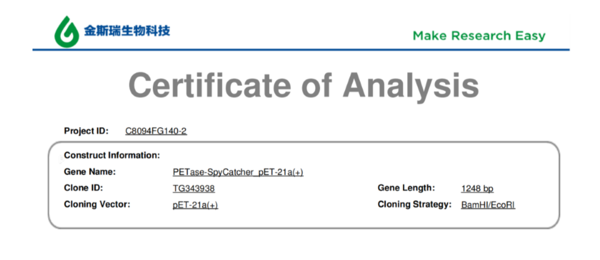
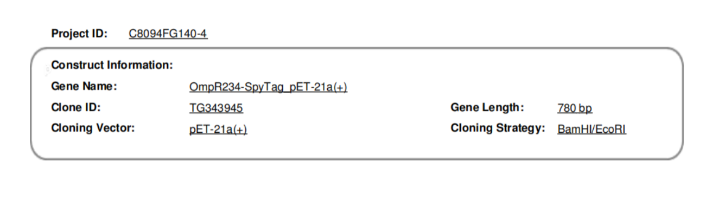
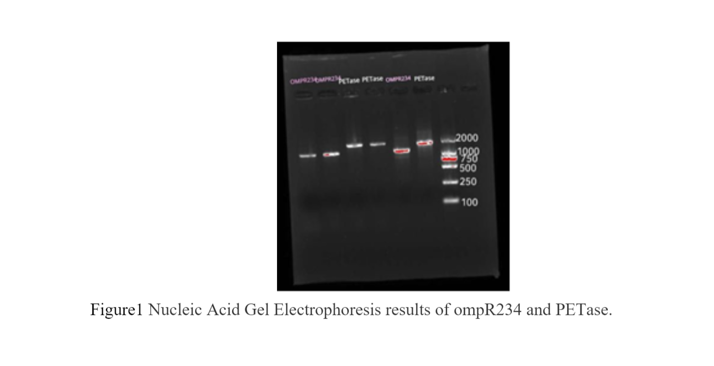
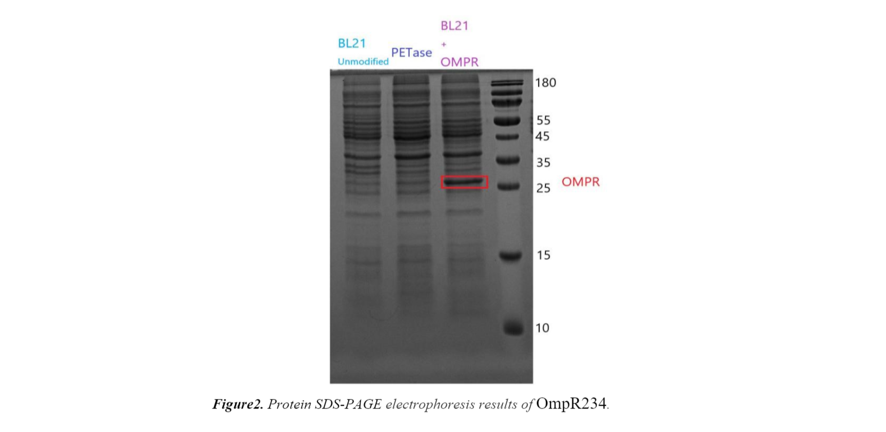

1. Plasmid construction
We ordered our plasmid from biosynthesis company as the figure below shows.
 As mentioned in our DESIGN page, biofilm part BBa_K3576000 and PETase part BBa_K3576001 are our two main parts. This final construct was ordered from JInruisi Bio Comapany and cloned into the standard pET-21a (+) Biobrick backbone. To confirm the correctness of the plasmid construct, BamHI and EcoRI were used to digest the plasmids. The results (figure 1) shown that the lengths of OMPR and PETase genes is around 1500 bp and 2000 bp, respectively, which meets the expected lengths (Naturally, OmpR234 should be 675bp and PETase should be 1206bp. Since the lengths of genes shown in figure are affected by their primers, they are larger than the theoretical values, but they generally meet the expectation. )
2. Protein expression test
-
Strengthen Biofilm Part (OmpR234) BBa_K3576000
SDS-PAGE electrophoresis was used to check the expression of OmpR234 proteins. As shown in figure 2, compared to the blank control, the lane contained OmpR234 protein (28.8 KDa) indicated that OmpR234 protein have been successfully expressed. With regarding to PETase proteins, they ought to express successfully on another SDS-PAGE gel, which is less dense than the gel in Figure 2.
 -
PETase expression part (BBa_K3576001)
We used Protein SDS-PAGE electrophoresis to check the expression of PETase proteins, and the figure shows that the length of PETase is 42.3 KDA, which indicates that the PETase proteins have been successfully expressed.